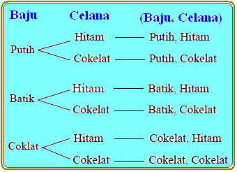

Kaidah penjumlahan adalah jika ada dua kejadian yang saling eksklusif, jumlah kemungkinan dari kedua kejadian adalah penjumlahan dari masing-masing kejadian.
Misalkan ada dua toko pakaian yang berbeda. Di toko pertama, ada 5 pilihan kemeja. Di toko kedua, ada 7 pilihan jaket. Jika Anda hanya akan membeli kemeja dari toko pertama atau jaket dari toko kedua, maka jumlah total cara memilih adalah:
Jumlah total cara memilih adalah:
5 (kemeja) + 7 (jaket) = 12 cara.
Jadi, ada 12 cara berbeda untuk memilih antara kemeja dari toko pertama atau jaket dari toko kedua.
Kaidah perkalian adalah jika ada dua kejadian yang dapat terjadi secara bersamaan, jumlah kemungkinan adalah hasil kali dari masing-masing kejadian.
Anda ingin membeli satu kemeja dan satu jaket. Di toko pertama, ada 5 pilihan kemeja. Di toko kedua, ada 7 pilihan jaket. Untuk membeli satu kemeja dan satu jaket, total kombinasi adalah:
5 x 7 = 35 cara. Jadi, ada 35 kombinasi berbeda kemeja dan jaket yang bisa Anda pilih.
Untuk membedakan kaidah penjumlahan dan kaidah perkalian, Anda perlu mempertimbangkan sifat dari kejadian yang terjadi. Jika kejadian tersebut saling eksklusif, gunakan kaidah penjumlahan. Sebaliknya, jika kejadian tersebut dapat terjadi secara bersamaan, gunakan kaidah perkalian.